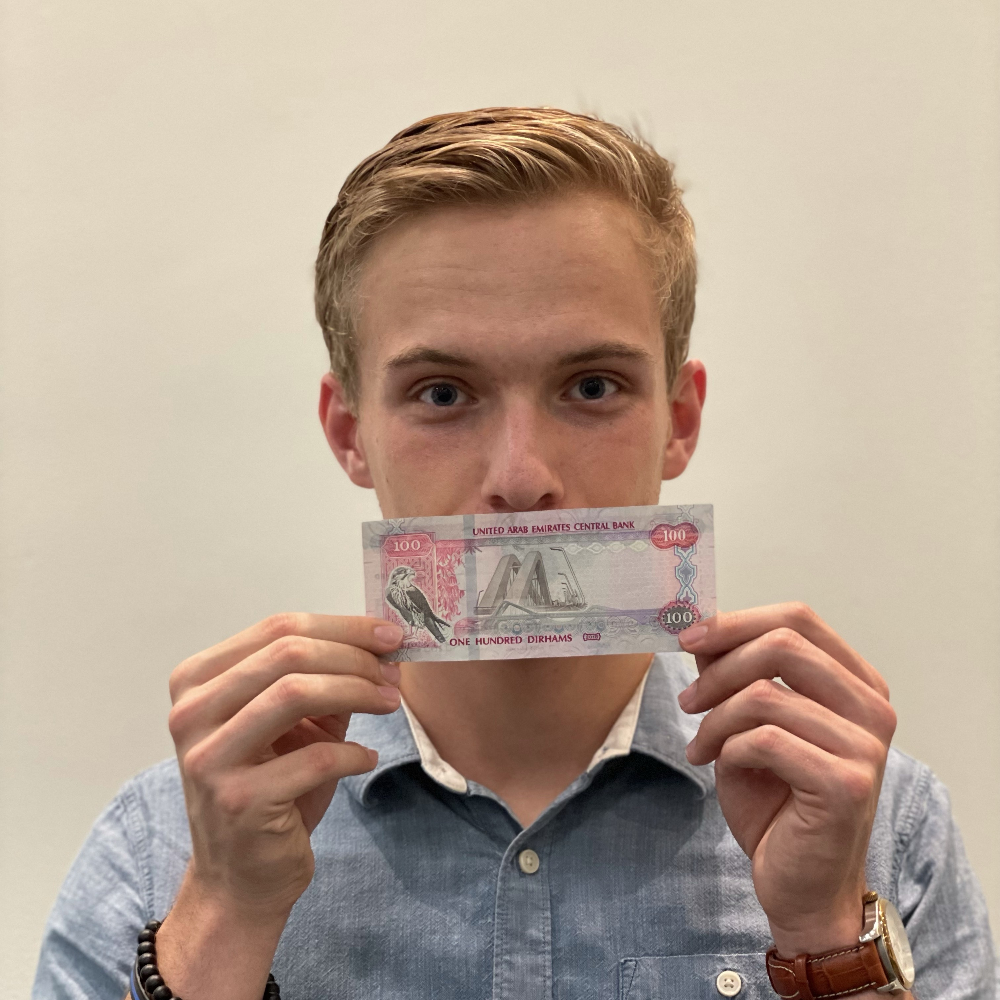
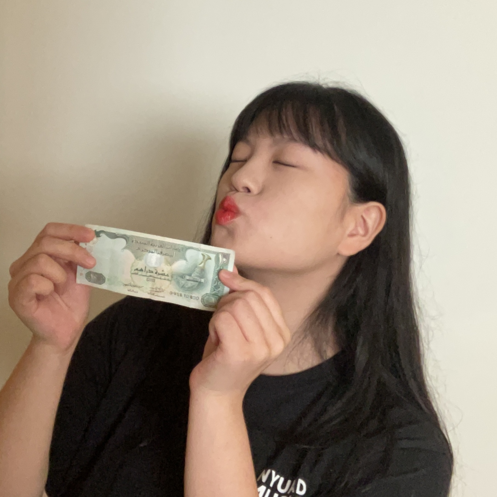
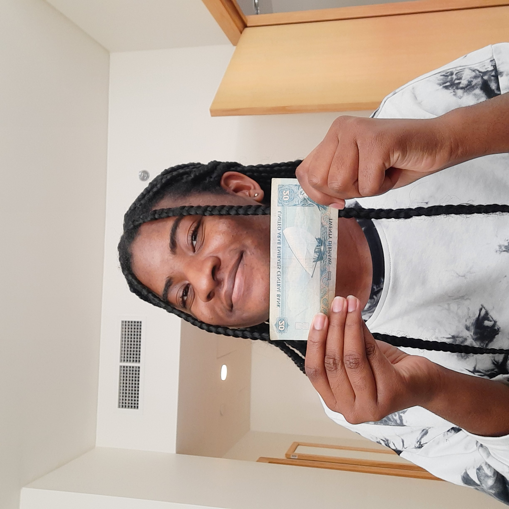
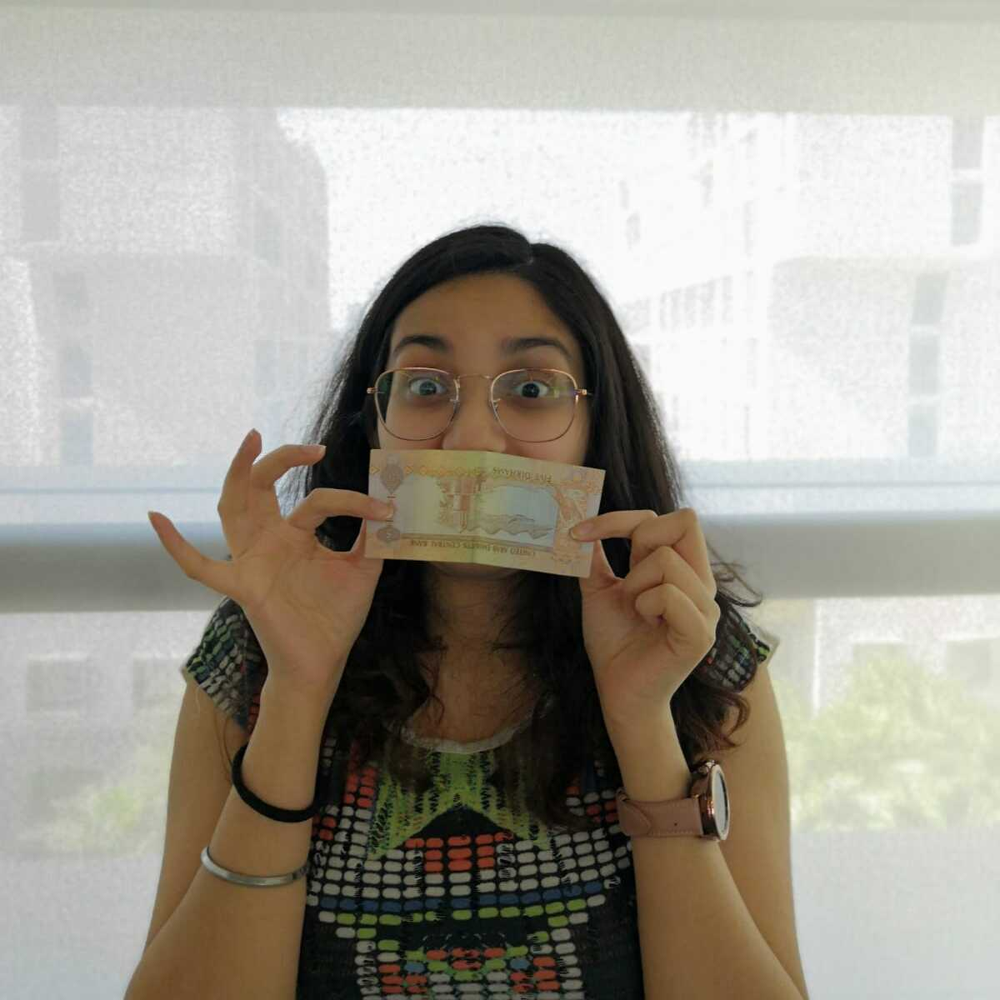

Cole Beasley is a computer science major and interactive media minor at NYUAD, obviously for the amount of money in these fields. Absolutely obsessed with money, Cole stars in this film as just another human connected to his peers with the shared principles of the glory of cash

Eunsu Choi is an off-cycle senior student studying music at NYUAD. Her final semester of the undergraduate years is going to be the only time she is going to be financially sustainable. Along with the new falcon dirhams policy, every dirham is very precious to her at the moment. Absolutely in love with money, Eunsu stars in this film along with her peers to celebrate the connectivity and the universal appreciation of money.

Chinonyerem Ukaegbu is a sophomore majoring in Computer Science and minoring in Interactive Media with one thing on her mind: money. She spends countless hours collecting the treasure and spends even more hours arranging the notes, polishing the coins, dusting off the cards. In her free time she dreams of money and its endless possibilities. She stars in this film alongside her like minded peers to celebrate what truly makes the world go round: not love, not friends, not family, but money.

Gopika Krishnan is a junior majoring in computer science with a minor in applied math. Money is her first true love and Gopika has been inspired by its glorious life ever since she was a child. In whatever form, be it coins or cash or cards, she loves them all equally. Gopika stars in this movie, alongside her like-minded peers to celebrate the force that brings us together: money.